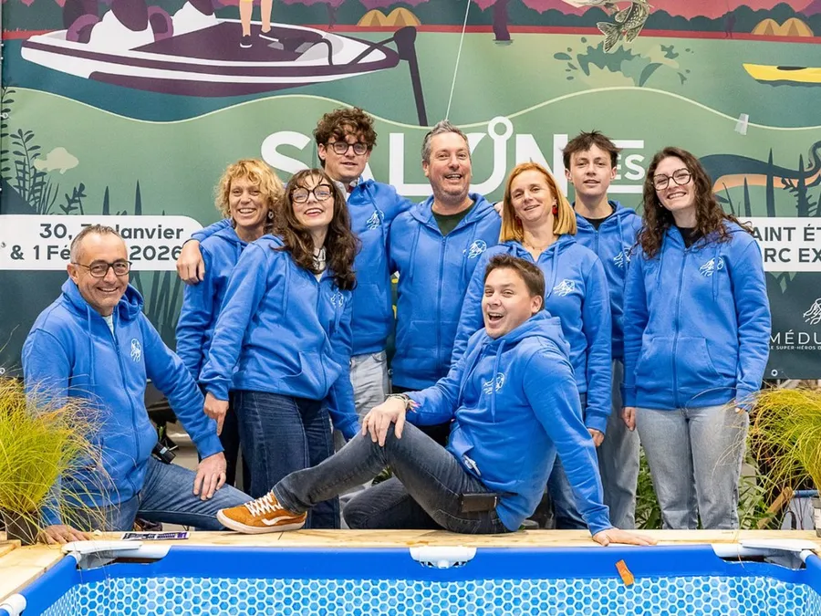
Salon des Pêches
Légende : CMAuditGraphismeRédacUGC
CM = community management · Rédac = rédactionnel

Salon des Pêches
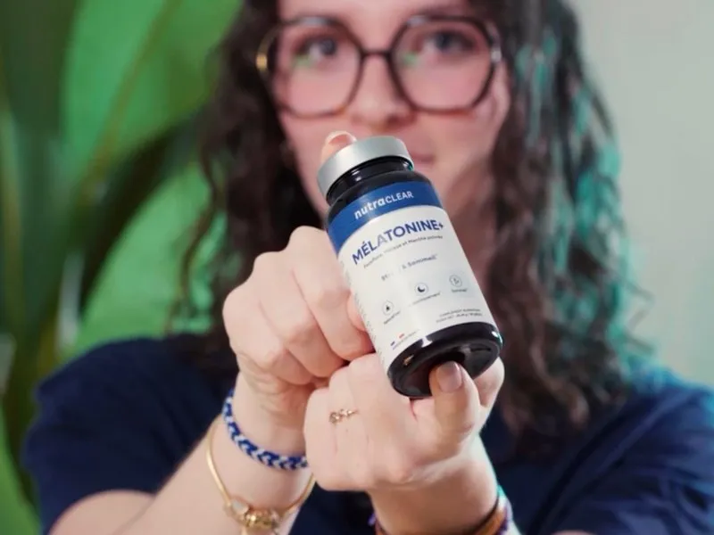
Nutraclear
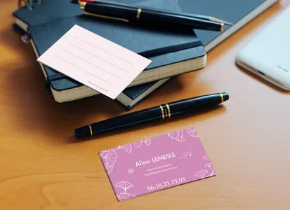
Aline Lemesle
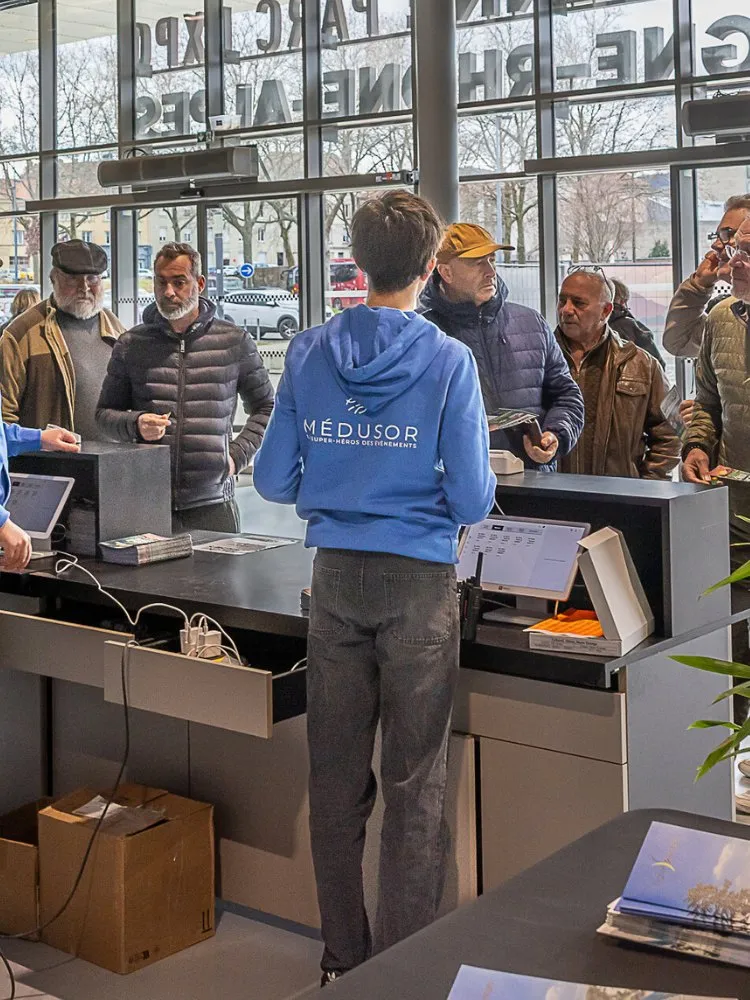
Médusor
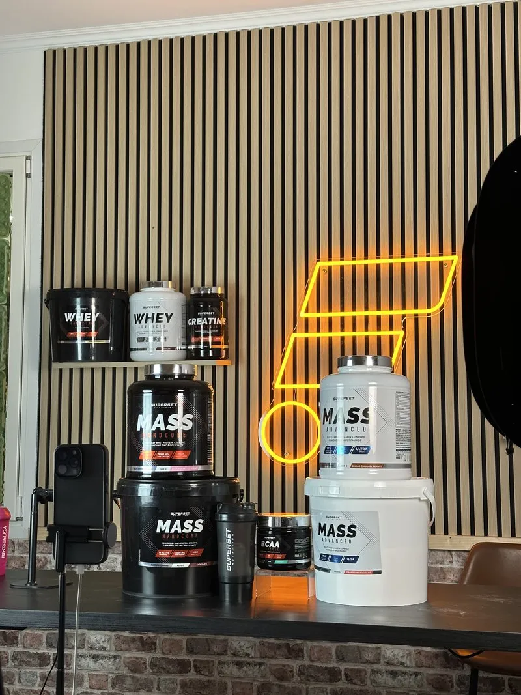
Fitadium
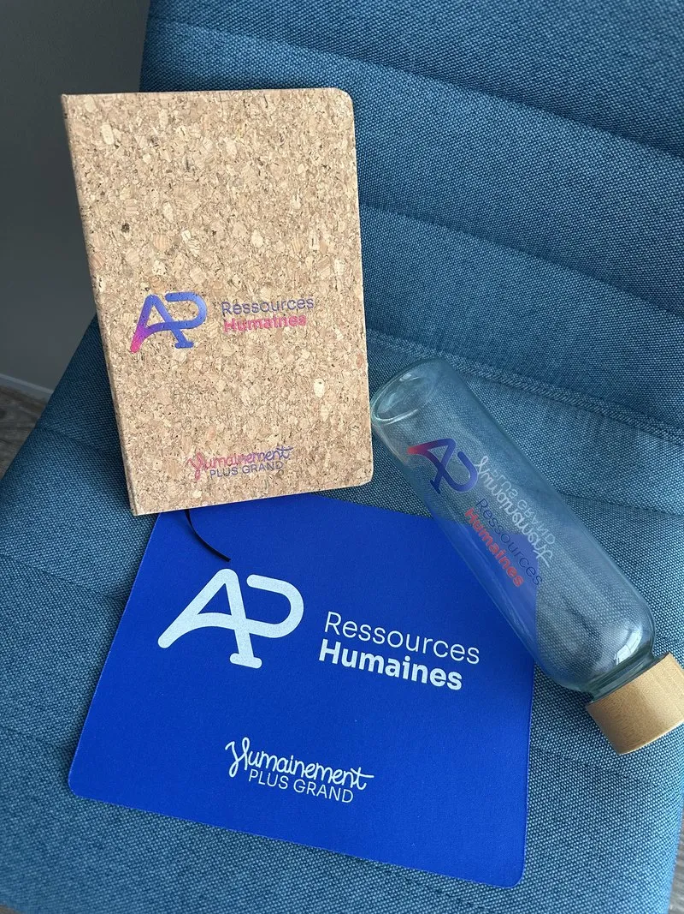
AP Ressources Humaines
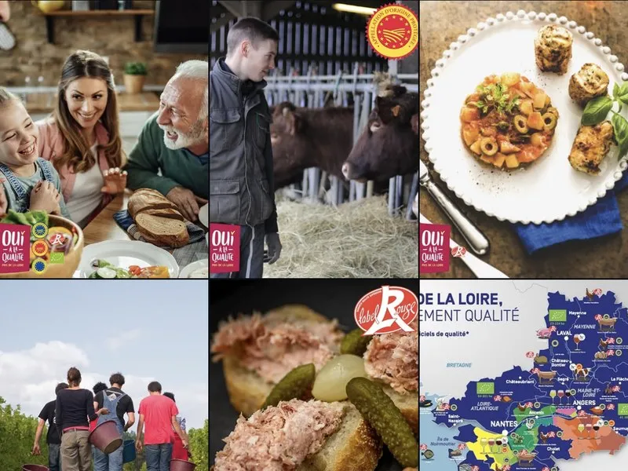
Oui à la Qualité en Pays de la Loire
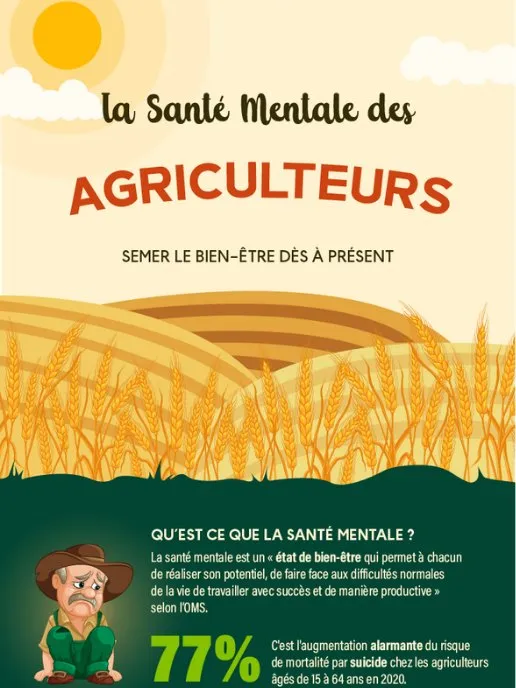
MSA
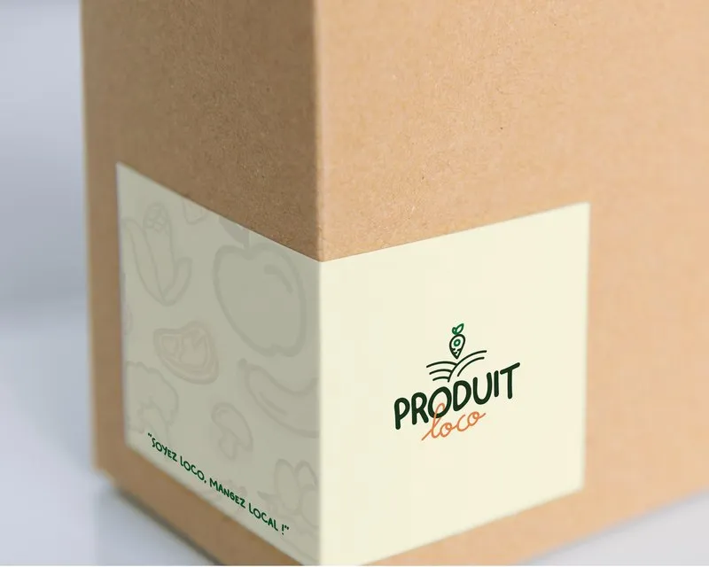
Produit Loco
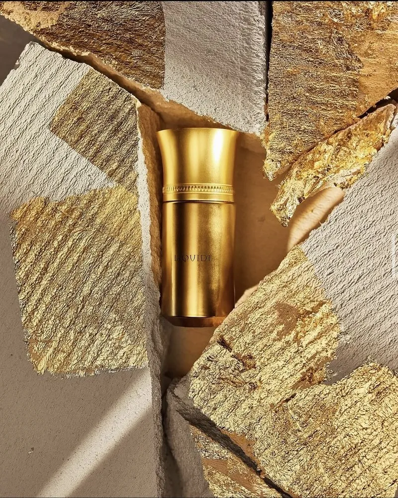
Liquide Imaginaire
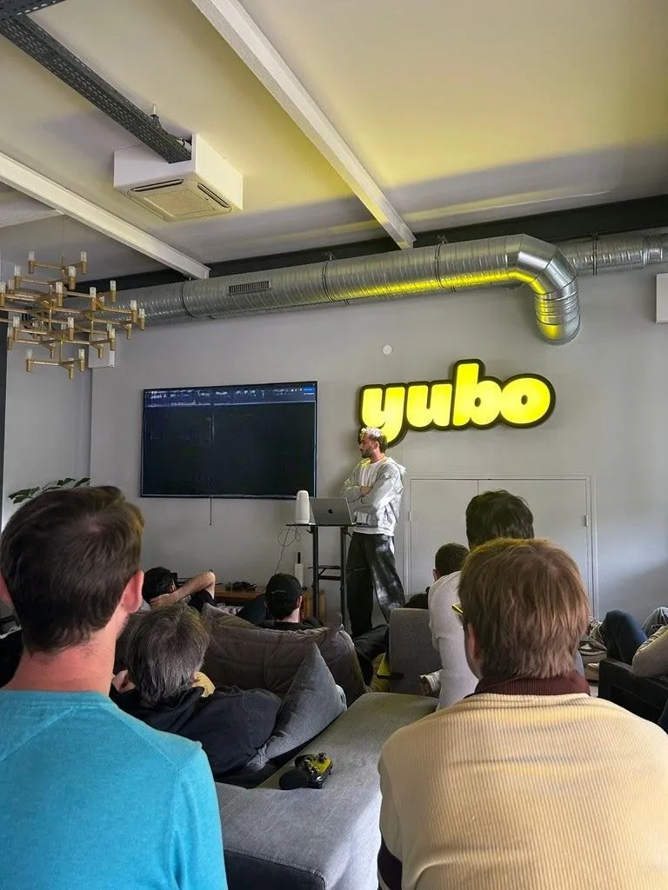
Yubo
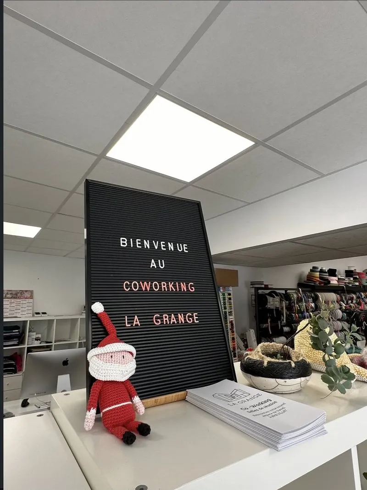
La Grange Coworking
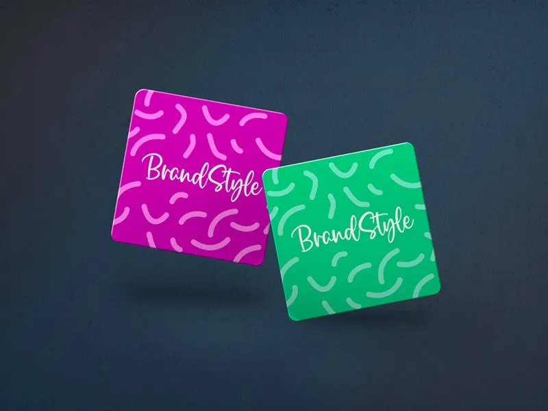
Brand Style
— Vidéos UGC
Tutos, avis produit, unboxings : des vidéos tournées comme le ferait une cliente.
Il y a peut-être une page de ce carnet qui vous attend. Racontez-moi votre projet.